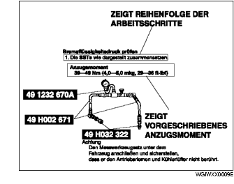
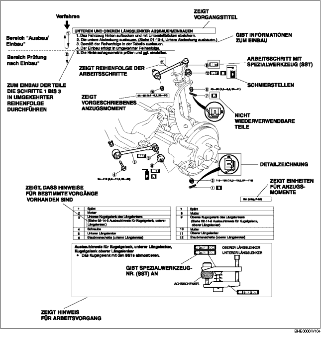
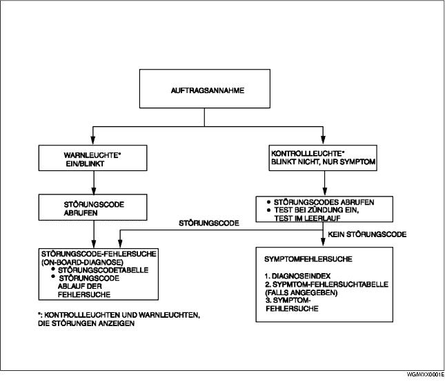
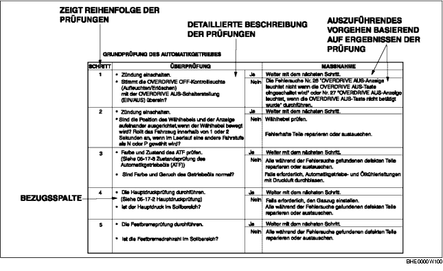
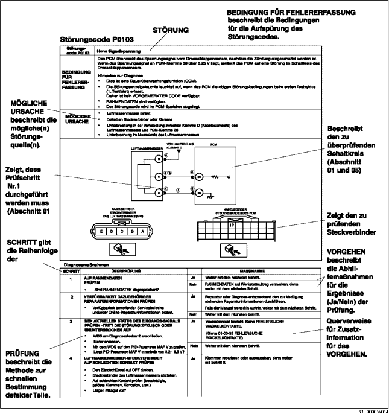
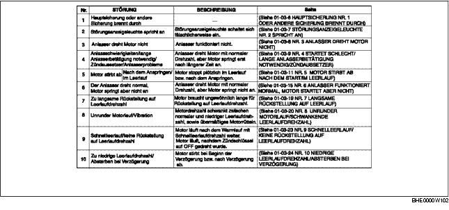
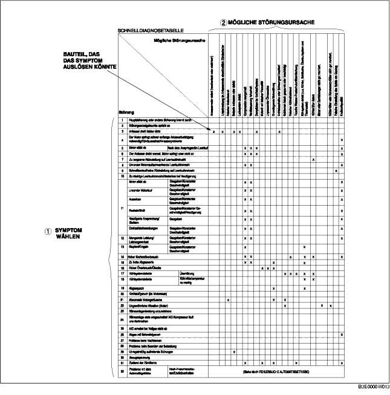
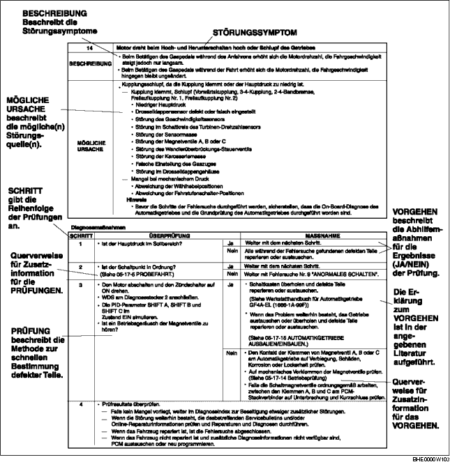

HINWEISE ZUM GEBRAUCH DIESES HANDBUCHS
B3E000000001W01
Überblick
• Dieses Handbuch erläutert die Vorgänge für die erforderlichen Wartungs- und Reparaturarbeiten. Die Erklärung ist in folgende 5 grundlegende Vorgänge aufgeteilt:
-
- Ausbau/Einbau
-
- Zerlegung/Zusammenbau
-
- Austausch
-
- Prüfung
-
- Einstellung
• Vorgänge, die augenfällig sind bzw. bei geschultem Werkstattpersonal vorausgesetzt werden können, wie der Ausbau/Einbau gewisser Teile, Aufbocken des Fahrzeugs, Anheben des Fahrzeugs mit einer Hebebühne, Reinigung von Teilen und Sichtprüfungen wurden daher weggelassen.
Wartung
Prüfung und Einstellung
-
• Die Prüfung und Einstellung sind in Schritte unterteilt. Wichtige Punkte in Bezug auf Arbeitsbereich und Inhalt der Arbeiten sind im Einzelnen erläutert und in den Abbildungen dargestellt.

Reparaturverfahren
1. Die meisten Reparaturverfahren werden mit einer Gesamtansicht eingeleitet, aus der die einzelnen Bauteile und ihre Anordnung sowie visuelle Prüfungen ersichtlich sind. Schriftliche Anweisungen für Aus- und Einbauverfahren sind nur aufgeführt, wenn ein Vorgehen in mehreren Schritten erforderlich ist.
2. Nicht wiederverwendbare Teile, Anzugsmomente und Symbole für Öl, Schmierfett und Dichtmittel werden in der Darstellung angegebenen. Zusätzlich werden auch Symbole angezeigt, die die Verwendung von Spezialwerkzeugen oder ähnlichem erfordern.
3. Die Arbeitsschritte sind nach ihrer Reihenfolge nummeriert und die betroffenen Teile in der Abbildung sind mit der entsprechenden Nummer versehen. Gelegentlich gibt es wichtige Punkte oder zusätzliche Informationen zu einem Arbeitsschritt. Diese Informationen bei Arbeiten an den jeweiligen Teilen berücksichtigen.

Symbole
• Es gibt acht Symbole, die für Öl, Fett, Flüssigkeiten, Dichtmittel und den Gebrauch eines SST oder ähnlichem stehen. Diese Symbole zeigen die Anwendungspunkte an oder den Gebrauch dieser Materialien während der Servicearbeiten.
|
Symbol
|
Durchzuführende Arbeiten
|
Verbrauchsmittel/Werkzeug
|
|
|
Öl auftragen
|
Neues Motor- bzw. Getriebeöl
|
|
|
Bremsflüssigkeit auftragen
|
Neue Bremsflüssigkeit
|
|
|
Automatikgetriebeöl auftragen
|
Neues Automatikgetriebeöl
|
|
|
Fett auftragen
|
Geeignetes Fett
|
|
|
Dichtmittel auftragen
|
Geeignetes Dichtmittel
|
|
|
Vaseline auftragen
|
Geeignete Vaseline
|
|
|
Teil austauschen
|
O-Ring, Dichtung usw.
|
|
|
SST verwenden
|
Geeignete Werkzeuge
|
Sicherheits- und Arbeitshinweise
• In diesem Handbuch sind wichtige Sicherheits- und Arbeitshinweise unter den Titeln Vorsicht, Achtung, Hinweis sowie Sollwerte und obere und untere Grenzwerte aufgeführt.
Vorsicht
-
• Vorsicht weist auf eine Situation hin, in der es bei Nichtbeachtung der Anweisungen zu schweren oder gar lebensgefährlichen Verletzungen kommen kann.
Achtung
-
• Achtung weist auf eine Situation hin, in der das Fahrzeug oder Teile Schaden nehmen können, wenn dieser Hinweis ignoriert wird.
Hinweis
-
• Hinweis liefert zusätzliche Informationen zum Ausführen eines bestimmten Arbeitsschrittes.
Vorgabe
-
• Sollwerte bzw. -bereiche für Prüfungen oder Einstellungen werden angegeben.
Obere und untere Grenzwerte
-
• Werte, die bei der Prüfung oder Einstellung nicht über- bzw. unterschritten werden dürfen, sind ebenso aufgeführt.
Fehlersuche
Grundlegender Arbeitsablauf

Ablauf der Störungscode-Fehlersuche (On-Board-Diagnose)
-
• Störungscodes (DTCs) geben wichtige Hinweise für das Beheben von Störungen, die schwer zu simulieren sind. Die diagnostische Prüfung des speziellen DTC durchführen, um die Störung schnell und präzise aufzuspüren.
-
• Die On-Board-Diagnose wird während der Prüfung verwendet. Wenn ein DTC angezeigt wird, der den Grund für eine Fehlfunktion angibt, die diagnostische Prüfung entsprechend der von der On-Board-Diagnose vorgeschriebenen Punkte durchführen.
Diagnoseindex
-
• Der Diagnoseindex führt die Symptome der spezifischen Fehlfunktionen auf. Die Symptome wählen, die mit der Fehlfunktion zusammenhängen oder dieser am nächsten kommen.
Diagnosetabelle (falls angegeben)
-
• Die Diagnosetabelle führt alle Diagnose- und Prüfungsschritte auf, die speziell zur Ermittlung der Fehlerursache durchgeführt werden.
Symptom-Fehlersuche
-
• Die Fehlersuche stellt schnell den Ort der Störung entsprechend des Symptomtyps fest.
Vorgehensweise
Durchführung der Grundprüfung (Kapitel 05)
-
• Die Grundprüfung vor der Fehlersuche durchführen.
-
• Die Schritte in der angegebenen Reihenfolge durchführen.
-
• Die Bezugsspalte verweist auf Seiten/Kapitel, wo detaillierte Beschreibungen der einzelnen Prüfungen zu finden sind.
-
• Auch wenn die Prüfungen und Einstellungen gemäß der in der Bezugsspalte aufgeführten Abläufe durchgeführt werden, sind die Schritte wie in der Spalte 'Handlung' angezeigt fortzusetzen, falls die Störungsursache während der Grundprüfung gefunden wird.

Durchführung der Störungscode-Fehlersuche
-
• Die Störungscode-Fehlersuche zeigt diagnostische Schritte, Prüfverfahren und geeignete Maßnahmen für jeden Störungscode.

Benutzung des Diagnoseindex
-
• Die Symptome der Störungen sind im Diagnoseindex für die Fehlersuche aufgeführt.
-
• Die exakten Störungssymptome können ausgewählt werden, indem man dem Index folgt.

Verwendung der Diagnosetabelle
-
• Die Tabelle führt die Beziehung zwischen dem Symptom und dem Grund für die Störung auf.
-
• Die Tabelle ist sehr effektiv bei der Bestimmung der Beziehung zwischen dem Symptom und dem Grund für eine Störung. Sie gibt auch den Bereich der gemeinsamen Ursache an, wenn mehrere Störungssymptome auftreten.
-
• Die zutreffende diagnostische Prüfung, die sich auf die Störungsursache bezieht, die durch die Symptome bestimmt wird, kann mit Hilfe der Durchsicht der Diagnoseprüfungsspalte der Tabelle ausgewählt werden.

Symptom-Fehlersuche
-
• Die Fehlersuche zeigt diagnostische Schritte, Prüfverfahren und geeignete Maßnahmen für jedes Störungssymptom.
